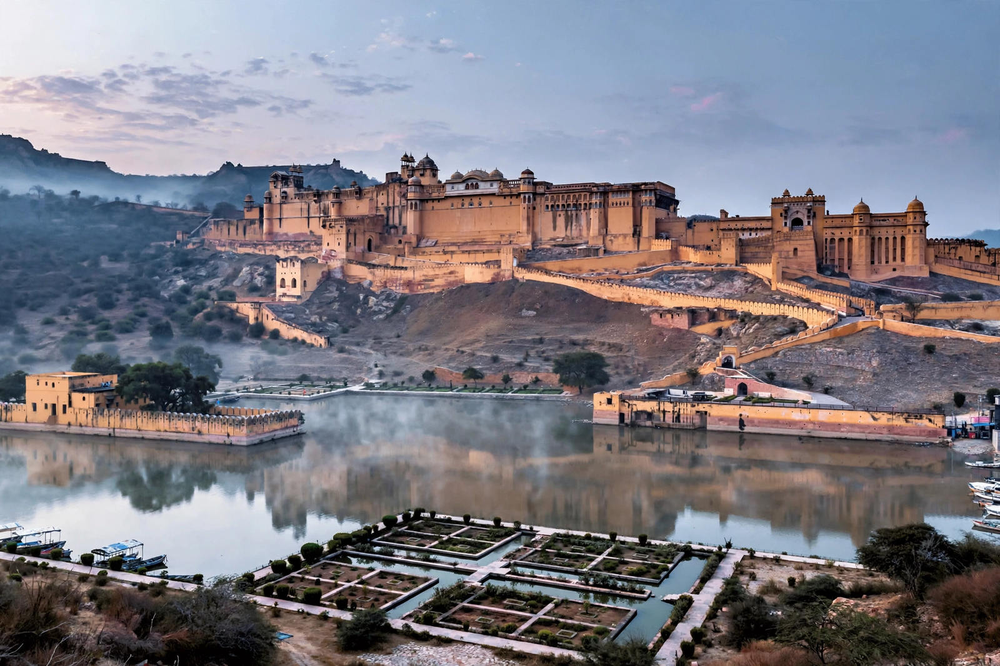

Amber Fort
From Wikipedia, the free encyclopedia

Amber Fort (Amer Fort) is a fort and palace complex located in Amer, a town 11 km from Jaipur, Rajasthan, India. Built from red sandstone and marble on a forested hill above Maota Lake, it was the residence of the Rajput Maharajas of the Kachhwaha clan — begun by Man Singh I in 1592 and expanded over 150 years. Its artistic style fuses Hindu and Mughal influences; the palace is famed for the Sheesh Mahal (Mirror Palace), whose walls of mirrored mosaic glitter by candlelight.
The palace
The fort's four courtyards ascend in sequence: the public audience hall (Diwan-i-Aam) on carved pillars, the royal apartments around a charbagh garden, the zenana quarters with their famous screen of interconnected rooms allowing the king discreet movement, and the Sheesh Mahal and Jai Mandir above. A secret passage connects Amber to Jaigarh Fort, where the world's largest cannon on wheels, Jaivana, still stands.
Visiting and heritage
A UNESCO World Heritage Site since 2013 (among the Hill Forts of Rajasthan), Amber draws millions of visitors; elephant rides up the ramp have been progressively restricted on animal-welfare grounds, and a night sound-and-light show recounts its history.